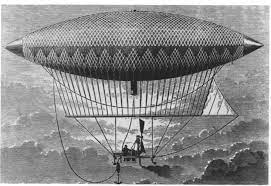

Henri Giffard, ingénieur français, naît le 8 février 1825 à Paris. Il suit des études au collège Bourbon, où il se passionne pour les chemins de fer. Il devient ensuite, tout naturellement, conducteur de locomotives. Très intéressé par le vol et la mécanique, Henri Giffard fait ses premiers tours de ballons à 18 ans, avant de fabriquer ses premiers moteurs à vapeur à haut rendement en 1849.

En 1851, Henri Giffard dépose un premier brevet sur l'application de la vapeur à la navigation aérienne, et il effectue le 24 septembre 1852, le premier vol propulsé et contrôlé d'un dirigeable, entre Paris et Trappes. Suite à ce premier succès, Henri Giffard enchaîne les brevets, comme celui de 1857 pour la valve de régulateur, ou encore celui de 1858 pour un injecteur fonctionnant avec deux cônes séparés par un intervalle libre. En 1859, Henri Giffard sort les premières locomotives avec ce système révolutionnaire.
Soucieux d'améliorer encore et toujours son dirigeable, Henri Giffard fabrique en 1867, pour l'Exposition universelle, un ballon à hydrogène de 5 000 m3, puis de 12.000 m3 en 1869. Mais c'est en 1878, avec l'Exposition universelle de Paris, qu'il remporte son plus grand succès. Il monte un dirigeable de 25.000 m3 pouvant contenir quarante passagers, aux Tuileries. Les ascensions ne s'arrêteront pas tout le temps de l'Exposition.
Alors qu'il devient peu à peu aveugle, Henri Giffard décide d'en finir avec la vie le 15 avril 1882, en respirant une dose de chloroforme. Il laisse toute sa fortune aux pauvres et aux scientifiques, devenant l'un des grands mécènes de l'aviation moderne. Son nom est gravé sur la face Grenelle de la tour Eiffel